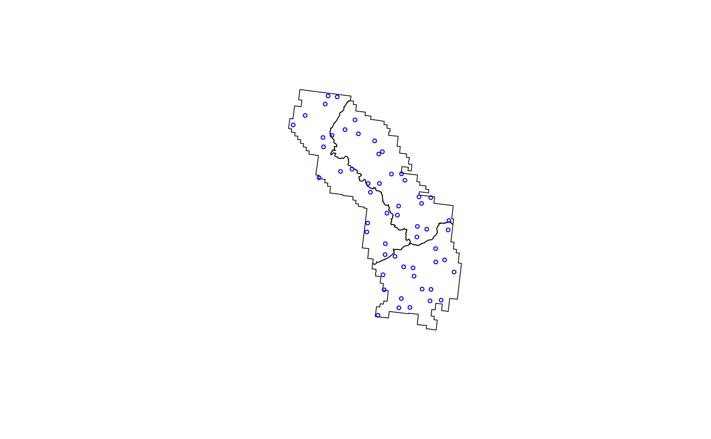

Small Area (SA) module overview
FIESTA’s Small Area (SA) module was set up as a platform
to integrate with current Small Area Estimators available on CRAN
including the JoSAE (Breidenbach 2015), sae
(Molina and Marhuenda 2015), and hbsae (Boonstra 2012)
packages that use unit-level and area-level models such as the Empirical
Best Linear Unbiased Prediction (EBLUP) estimation strategy and the
hierarchical Bayesian estimation strategy. Rao (2003) discusses the
benefits of the EBLUP for balancing potential bias of synthetic
estimators against the instability of a direct estimator. White et al
(2021) discusses the benefits of Small Area Estimation in a hierarchical
Bayesian context, especially for forestry data. The module includes
functional steps for checking, compiling, and formatting FIA plot data
and auxiliary spatial information for input to R packages, such as
JoSAE (Breidenbach 2015), sae (Molina and
Marhuenda 2015), or hbsae (Boonstra 2012) and translates
integrated package output to FIESTA output format.
Functions in FIESTA used for fitting Small Area
Estimators include the modSAarea function for area
estimates and modSAtree for tree estimates. The
modSApop function is used to get population data needed for
small area estimation. Below is a description and table of contents for
the sections related to these functions:
| FUNCTION | DESCRIPTION |
|---|---|
| modSApop | Creates population data for small area estimation. |
| modSAarea | Produces area level estimates through small area estimation. |
| modSAtree | Produces tree level estimates through small area estimation. |
Objective of tutorial
The main objective of this tutorial is to demonstrate how to use
FIESTA for generating estimates using estimators from the
JoSAE, sae, and hbsae R packages.
The following examples are for generating estimates and estimated
variances using standard FIA Evaluation data from FIA’s National
database, with custom Estimation unit and Stratification information.
The examples use data from three inventory years of field measurements
in the state of Wyoming, from FIADB_1.7.2.00, last updated June 20,
2018, downloaded on June 25, 2018 and stored as internal data objects in
FIESTA.
Example data - Wyoming (WY), Inventory Years 2011-2012
View SA Example Data
| Data Frame | Description |
|---|---|
| WYplt | WY plot-level data |
| WYcond | WY condition-level data |
| WYtree | WY tree-level data |
| External data | Description |
|---|---|
| WYbighorn_adminbnd.shp | Polygon shapefile of WY Bighorn National Forest Administrative boundary* |
| WYbighorn_districtbnd.shp | Polygon shapefile of WY Bighorn National Forest District boundaries** |
| WYbighorn_forest_nonforest_250m.tif | GeoTIFF raster of predicted forest/nonforest (1/0) for stratification*** |
| WYbighorn_dem_250m.img | Erdas Imagine raster of elevation change, in meters**** |
*USDA Forest Service, Automated Lands Program (ALP). 2018. S_USA.AdministrativeForest (). Description: An area encompassing all the National Forest System lands administered by an administrative unit. The area encompasses private lands, other governmental agency lands, and may contain National Forest System lands within the proclaimed boundaries of another administrative unit. All National Forest System lands fall within one and only one Administrative Forest Area.
**USDA Forest Service, Automated Lands Program (ALP). 2018. S_USA.RangerDistrict (http://data.fs.usda.gov/geodata/edw). Description: A depiction of the boundary that encompasses a Ranger District.
***Based on MODIS-based classified map resampled from 250m to 500m resolution and reclassified from 3 to 2 classes: 1:forest; 2:nonforest. Projected in Albers Conical Equal Area, Datum NAD27 (Ruefenacht et al. 2008). Clipped to extent of WYbighorn_adminbnd.shp.
****USGS National Elevation Dataset (NED), resampled from 30m resolution to 250m. Projected in Albers Conical Equal Area, Datum NAD27 (U.S. Geological Survey 2017). Clipped to boundary of WYbighorn_adminbnd.shp.
Set up
First, you’ll need to load the FIESTA library:
Next, you’ll need to set up an “outfolder”. This is just a file path
to a folder where you’d like FIESTA to send your data
output. For this vignette, we have set our outfolder file path as a
temporary directory.
outfolder <- tempdir()Get data for examples
View Getting Data
Now that we’ve loaded FIESTA and setup our outfolder, we
can retrieve the data needed to run the examples. First, we point to
some external data and predictor layers stored in FIESTA
and derive new predictor layers using the terra
package.
# File names for external spatial data
WYbhfn <- system.file("extdata", "sp_data/WYbighorn_adminbnd.shp", package="FIESTA")
WYbhdistfn <- system.file("extdata", "sp_data/WYbighorn_districtbnd.shp", package="FIESTA")
WYbhdist.att <- "DISTRICTNA"
fornffn <- system.file("extdata", "sp_data/WYbighorn_forest_nonforest_250m.tif", package="FIESTA")
demfn <- system.file("extdata", "sp_data/WYbighorn_dem_250m.img", package="FIESTA")
# Derive new predictor layers from dem
library(terra)
dem <- rast(demfn)
slpfn <- paste0(outfolder, "/WYbh_slp.img")
slp <- terra::terrain(dem,
v = "slope",
unit = "degrees",
filename = slpfn,
overwrite = TRUE,
NAflag = -99999.0)
aspfn <- paste0(outfolder, "/WYbh_asp.img")
asp <- terra::terrain(dem,
v = "aspect",
unit = "degrees",
filename = aspfn,
overwrite = TRUE,
NAflag = -99999.0)Next, we define the small area boundary layer and the name of the attribute in the layer that delineates the domains.
smallbnd <- WYbhdistfn
smallbnd.domain <- "DISTRICTNA"Next, we can get our FIA plot data and set up our auxiliary data. We
can get our FIA plot data with the spGetPlots function from
FIESTA. In this case we already have all of the necessary
tables loaded as objects into R so we just need to supply them to the
function in an appropriate manner. Note that spGetPlots is
also capable of accessing data through FIA’s
DataMart. In that case, the data is first downloaded for all U.S.
states intersecting the boundary, and then later on it is further subset
to plots that fall within the boundary of interest. For more examples
and documentation see help(spGetPlots) or the
sp vignette.
For this example we define a custom evaluation
(eval = 'custom') which consists of plots from inventory
years 2011-2013.
SApltdat <- spGetPlots(bnd = WYbhdistfn,
xy_datsource = "obj",
xy = WYplt,
xy_opts = xy_options(xy.uniqueid = "CN",
xvar = "LON_PUBLIC",
yvar = "LAT_PUBLIC",
xy.crs = 4269),
datsource = "obj",
dbTabs = dbTables(plot_layer = WYplt,
cond_layer = WYcond,
tree_layer = WYtree,
seed_layer = WYseed),
eval = "custom",
eval_opts = eval_options(invyrs = 2011:2013),
showsteps = TRUE,
returnxy = TRUE,
savedata_opts = savedata_options(outfolder = outfolder))output
## ================================================================================plot

str(SApltdat, max.level = 1)output
## List of 11
## $ spxy :Classes 'sf' and 'data.frame': 56 obs. of 9 variables:
## ..- attr(*, "sf_column")= chr "geometry"
## ..- attr(*, "agr")= Factor w/ 3 levels "constant","aggregate",..: 3 3 3 3 3 3 3 3
## .. ..- attr(*, "names")= chr [1:8] "PLT_CN" "INVYR" "STATECD" "UNITCD" ...
## $ tabs :List of 3
## $ tabIDs :List of 3
## $ pltids :'data.frame': 56 obs. of 8 variables:
## $ bnd :Classes 'sf' and 'data.frame': 3 obs. of 5 variables:
## ..- attr(*, "sf_column")= chr "geometry"
## ..- attr(*, "agr")= Factor w/ 3 levels "constant","aggregate",..: NA NA NA NA
## .. ..- attr(*, "names")= chr [1:4] "REGION" "FORESTNUMB" "DISTRICTNU" "DISTRICTNA"
## $ puniqueid : chr "CN"
## $ xy.uniqueid: chr "PLT_CN"
## $ pjoinid : chr "CN"
## $ states : chr "Wyoming"
## $ invyrs : int [1:3] 2011 2012 2013
## $ args :List of 11Finally, we must have plot level auxiliary data for for small area
estimation. We can do this with the spGetAuxiliary function
from FIESTA. Again, see the sp vignette for
further information on this function.
rastlst.cont <- c(demfn, slpfn, aspfn)
rastlst.cont.name <- c("dem", "slp", "asp")
rastlst.cat <- fornffn
rastlst.cat.name <- "fornf"
unit_layer <- WYbhdistfn
unitvar <- "DISTRICTNA"
auxdat <- spGetAuxiliary(xyplt = SApltdat$spxy,
uniqueid = "PLT_CN",
unit_layer = unit_layer,
unitvar = "DISTRICTNA",
rastlst.cont = rastlst.cont,
rastlst.cont.name = rastlst.cont.name,
rastlst.cont.stat = "mean",
rastlst.cont.NODATA = 0,
rastlst.cat = rastlst.cat,
rastlst.cat.name = rastlst.cat.name,
asptransform = TRUE,
rast.asp = aspfn,
keepNA = FALSE,
showext = FALSE,
savedata = FALSE)
str(auxdat, max.level = 1)output
## List of 12
## $ unitvar : chr "DISTRICTNA"
## $ pltassgn :'data.frame': 56 obs. of 15 variables:
## $ pltassgnid : chr "PLT_CN"
## $ unitarea :'data.frame': 3 obs. of 2 variables:
## $ areavar : chr "ACRES_GIS"
## $ unitzonal :'data.frame': 3 obs. of 9 variables:
## $ inputdf :Classes 'data.table' and 'data.frame': 4 obs. of 7 variables:
## ..- attr(*, ".internal.selfref")=<externalptr>
## $ prednames : chr [1:5] "dem" "slp" "asp_cos" "asp_sin" ...
## $ zonalnames : chr [1:7] "dem" "slp" "asp_cos" "asp_sin" ...
## $ predfac : chr "fornf"
## $ npixelvar : chr "npixels"
## $ predfac.levels:List of 1Examples
modSApop
Example 1: Creating our population dataset with
modMApop
View Example
We can create our population data for small area estimation. To do
so, we use the modSApop function in FIESTA. We
must assign our plot data with the pltdat argument, the
auxiliary dataset with the auxdat argument, and set
information for our small areas with the smallbnd and
smallbnd.domain arguments. The spGetPlots and
spGetAuxiliary functions have done much of the hard work
for us so far, so we can just run a simple call to
modSApop:
SApopdat <- modSApop(pltdat = SApltdat,
auxdat = auxdat,
smallbnd = WYbhdistfn,
smallbnd.domain = smallbnd.domain)Note that the modSApop function returns a list with lots
of information and data for us to use. For a quick look at what this
list includes we can use the str function:
str(SApopdat, max.level = 1)output
## List of 43
## $ module : chr "SA"
## $ smallbnd :Classes 'sf' and 'data.frame': 3 obs. of 6 variables:
## ..- attr(*, "sf_column")= chr "geometry"
## ..- attr(*, "agr")= Factor w/ 3 levels "constant","aggregate",..: NA NA NA NA NA
## .. ..- attr(*, "names")= chr [1:5] "REGION" "FORESTNUMB" "DISTRICTNU" "DISTRICTNA" ...
## $ smallbnd.domain: chr "DISTRICTNA"
## $ popType : chr "VOL"
## $ pltidsadj :Classes 'data.table' and 'data.frame': 56 obs. of 5 variables:
## ..- attr(*, ".internal.selfref")=<externalptr>
## ..- attr(*, "sorted")= Named chr "CN"
## .. ..- attr(*, "names")= chr "CN"
## $ pltcondx :Classes 'data.table' and 'data.frame': 67 obs. of 40 variables:
## ..- attr(*, ".internal.selfref")=<externalptr>
## ..- attr(*, "sorted")= chr [1:2] "PLT_CN" "CONDID"
## $ pltcondflds : chr [1:39] "PLT_CN" "CONDID" "COND_STATUS_CD" "COND_NONSAMPLE_REASN_CD" ...
## $ pjoinid : Named chr "CN"
## ..- attr(*, "names")= chr "CN"
## $ cuniqueid : chr "PLT_CN"
## $ pltassgnid : Named chr "PLT_CN"
## ..- attr(*, "names")= chr "PLT_CN"
## $ condid : chr "CONDID"
## $ ACI : logi FALSE
## $ areawt : chr "CONDPROP_UNADJ"
## $ areawt2 : NULL
## $ adjcase : Named chr "ADJ_FACTOR_COND"
## ..- attr(*, "names")= chr "COND"
## $ dbqueries :List of 4
## $ dbqueriesWITH :List of 4
## $ pltassgnx :Classes 'data.table' and 'data.frame': 56 obs. of 9 variables:
## ..- attr(*, ".internal.selfref")=<externalptr>
## ..- attr(*, "sorted")= Named chr "PLT_CN"
## .. ..- attr(*, "names")= chr "PLT_CN"
## $ dunitlut :Classes 'data.table' and 'data.frame': 3 obs. of 10 variables:
## ..- attr(*, ".internal.selfref")=<externalptr>
## $ dunitarea :Classes 'data.table' and 'data.frame': 3 obs. of 2 variables:
## ..- attr(*, ".internal.selfref")=<externalptr>
## ..- attr(*, "sorted")= chr "DOMAIN"
## $ npixels : NULL
## $ npixelvar : chr "npixels"
## $ estvar.area : chr "CONDPROP_ADJ"
## $ areavar : chr "ACRES_GIS"
## $ areaunits : chr "acres"
## $ dunitvar : chr "DOMAIN"
## $ dunitvars : chr "DOMAIN"
## $ plotsampcnt :'data.frame': 2 obs. of 3 variables:
## $ condsampcnt :'data.frame': 4 obs. of 3 variables:
## $ states : chr "Wyoming"
## $ invyrs : int [1:3] 2011 2012 2013
## $ adj : chr "plot"
## $ P2POINTCNT :'data.frame': 0 obs. of 0 variables
## $ plotunitcnt :'data.frame': 3 obs. of 4 variables:
## $ treex :Classes 'data.table' and 'data.frame': 1706 obs. of 20 variables:
## ..- attr(*, ".internal.selfref")=<externalptr>
## ..- attr(*, "sorted")= chr [1:4] "PLT_CN" "CONDID" "SUBP" "TREE"
## $ tuniqueid : chr "PLT_CN"
## $ adjtree : logi FALSE
## $ unitwarnlut :Classes 'data.table' and 'data.frame': 3 obs. of 11 variables:
## ..- attr(*, ".internal.selfref")=<externalptr>
## ..- attr(*, "sorted")= chr "DISTRICTNA"
## $ adjfactors :Classes 'data.table' and 'data.frame': 56 obs. of 5 variables:
## ..- attr(*, ".internal.selfref")=<externalptr>
## ..- attr(*, "sorted")= Named chr "CN"
## .. ..- attr(*, "names")= chr "CN"
## $ adjvarlst : Named chr [1:4] "ADJ_FACTOR_COND" "ADJ_FACTOR_SUBP" "ADJ_FACTOR_MACR" "ADJ_FACTOR_MICR"
## ..- attr(*, "names")= chr [1:4] "COND" "SUBP" "MACR" "MICR"
## $ prednames : chr [1:5] "dem" "slp" "asp_cos" "asp_sin" ...
## $ predfac : chr "fornf"
## $ popdatindb : logi FALSENow that we’ve created our population dataset, we can move on to estimation.
modSAarea
Example 2: Area of forest land, unit-level EBLUP
View Example
First, we can set up our predictors as a vector:
all_preds <- c("slp", "dem", "asp_cos", "asp_sin", "fornf")Next, we fit the unit-level EBLUP using all of the predictors with
the JoSAE R package.
area1 <- modSAarea(SApopdatlst = SApopdat, # pop - population calculations for WY, post-stratification
prednames = all_preds, # est - character vector of predictors to be used in the model
SApackage = "JoSAE", # est - character string of the R package to do the estimation
SAmethod = "unit", # est - method of small area estimation. Either "unit" or "area"
multest = FALSE) # est - whether to also run all other available small area estimatorsThe modSAarea function outputs both the estimates:
area1$estoutput
## Key: <DOMAIN>
## DOMAIN Estimate Percent Sampling Error
## <char> <num> <num>
## 1: Medicine Wheel Ranger District 348467.4 6.55
## 2: Powder River Ranger District 312219.2 6.87
## 3: Tongue Ranger District 376453.1 5.05and a series of intermediate “raw” tables and items. These are
usually a collection of items that were used to produce the cleaned up
table of estimates (i.e area1$est).
str(area1$raw, max.level = 1)output
## List of 11
## $ dunit_totest :'data.frame': 3 obs. of 18 variables:
## $ domdat :'data.frame': 40 obs. of 4 variables:
## $ module : chr "SA"
## $ esttype : chr "AREA"
## $ SApackage : chr "JoSAE"
## $ SAmethod : chr "unit"
## $ estnm : chr "est"
## $ predselect.unit:'data.frame': 1 obs. of 8 variables:
## $ SAobjlst :List of 1
## $ estvar : chr "ESTIMATED_VALUE"
## $ areaunits : chr "acres"Example 3: Area of forest land, area-level EBLUP
View Example
In this example, we fit an area-level EBLUP with JoSAE,
while only using slp as a predictor. We use only one predictor in the
area level model because at the area level, we only have three rows in
our dataset. Since we also have a random effect term, the model we fit
can have a maximum of one predictor without being exactly singular. We
also set multest = TRUE which will cause the function to
produce estimates using all of the available small area estimators and
output these in a separate table.
area2 <- modSAarea(SApopdatlst = SApopdat, # pop - population calculations for WY, post-stratification
prednames = "dem", # est - character vector of predictors to be used in the model
SApackage = "JoSAE", # est - character string of the R package to do the estimation
SAmethod = "area", # est - method of small area estimation. Either "unit" or "area"
multest = TRUE) # est - whether to also run all other available small area estimatorsWe again can see our estimates. Notably, we have slightly larger percent sampling errors to the unit-level model fit in Example 2. This is likely due to only being able to incorporate one predictor’s worth of information to the model.
area2$estoutput
## Key: <DOMAIN>
## DOMAIN Estimate Percent Sampling Error
## <char> <num> <num>
## 1: Medicine Wheel Ranger District NA NA
## 2: Powder River Ranger District NA NA
## 3: Tongue Ranger District NA NASince FIESTA will attempt fit all models when running
modSAarea, we can look at all the different modeling
approaches and their estimates with the multest object.
area2$multestoutput
## DOMAIN LARGEBND NBRPLT JU.EBLUP JU.EBLUP.se.1
## 1 Medicine Wheel Ranger District 1 16 0.9066930 0.05629170
## 2 Powder River Ranger District 1 19 0.9054838 0.07657811
## 3 Tongue Ranger District 1 21 0.9105297 0.04466606
## JU.GREG JU.GREG.se hbsaeU hbsaeU.se JFH JFH.se hbsaeA hbsaeA.se
## 1 0.9453719 0.03644441 0.9230820 0.05729330 NA NA 0.9435430 0.02972864
## 2 0.8293966 0.10990101 0.8722579 0.06576108 NA NA 0.8501533 0.07461239
## 3 0.9257836 0.05143369 0.9175513 0.04796286 NA NA 0.9284455 0.04628168
## NBRPLT.gt0 AOI AREAUSED
## 1 11 1 364526.4
## 2 9 1 334337.0
## 3 17 1 413778.9Notably, the hbsae models returned NAs with this model,
likely due to computational issues with the integral they compute. Not
to worry, though, we will fit models with hbsae in the next
example.
Example 4: Area of forest land, hierarchical Bayesian models
View Example
FIESTA also supports the use of hierarchical Bayesian
(HB) models through the hbsae package as an alternative to
EBLUPs. These models use the same model specification as the EBLUP,
however they fit the model using a hierarchical Bayesian framework, and
get parameter estimates through numerical integration. Luckily, we do
not have to take an integral ourselves to fit these models, we can just
change the SApackage argument.
area3 <- modSAarea(
SApopdatlst = SApopdat, # pop - population calculations for WY, post-stratification
prednames = all_preds, # est - character vector of predictors to be used in the model
SApackage = "hbsae", # est - character string of the R package to do the estimation
SAmethod = "unit", # est - method of small area estimation. Either "unit" or "area"
multest = TRUE
)We can again check our estimates, small area method, and small area package.
area3$estoutput
## Key: <DOMAIN>
## DOMAIN Estimate Percent Sampling Error
## <char> <num> <num>
## 1: Medicine Wheel Ranger District 351360.9 7.08
## 2: Powder River Ranger District 304658.5 8.21
## 3: Tongue Ranger District 377514.3 5.86
area3$raw$SAmethodoutput
## [1] "unit"
area3$raw$SApackageoutput
## [1] "hbsae"Example 5: Ara of forest land, hierarchical Bayesian models, changing prior distribution
View Example
Notably, we can also set priors on the ratio of between and within
area variation with hbsae. By default, FIESTA
uses a weakly informative half-Cauchy prior on this parameter as
suggested by White et al (2021), but in this example we will fit the
same model as before, but with a flat prior.
area4 <- modSAarea(
SApopdatlst = SApopdat, # pop - population calculations for WY, post-stratification
prednames = all_preds, # est - character vector of predictors to be used in the model
SApackage = "hbsae", # est - character string of the R package to do the estimation
SAmethod = "unit", # est - method of small area estimation. Either "unit" or "area"
na.fill = "DIR",
prior = function(x) 1 # est - prior on ratio of between and within area variation
)Let’s check our results compared to Example 3 (same model with half-Cauchy prior)
area3$estoutput
## Key: <DOMAIN>
## DOMAIN Estimate Percent Sampling Error
## <char> <num> <num>
## 1: Medicine Wheel Ranger District 351360.9 7.08
## 2: Powder River Ranger District 304658.5 8.21
## 3: Tongue Ranger District 377514.3 5.86
area4$estoutput
## Key: <DOMAIN>
## DOMAIN Estimate Percent Sampling Error
## <char> <num> <num>
## 1: Medicine Wheel Ranger District 345195.4 3.15
## 2: Powder River Ranger District 278614.1 9.10
## 3: Tongue Ranger District 383354.0 5.00Due to rounding we do in FIESTA, we see the same result.
However, the estimates are slightly different. We can see this with the
model objects supplied in the output list from FIESTA:
Example 6: Area of forest land, with model variable selection,
JoSAE unit level EBLUP
View Example
FIESTA supports model variable selection via the elastic
net. To use model selection, we set the modelselect
argument to TRUE.
area5 <- modSAarea(
SApopdatlst = SApopdat, # pop - population calculations for WY, post-stratification
prednames = all_preds, # est - character vector of predictors to be used in the model
SApackage = "JoSAE", # est - character string of the R package to do the estimation
SAmethod = "unit", # est - method of small area estimation. Either "unit" or "area"
modelselect = TRUE # est - elastic net variable selection
)We can now look at estimates with our subset of selected predictors and the predictors that were selected.
area5$estoutput
## Key: <DOMAIN>
## DOMAIN Estimate Percent Sampling Error
## <char> <num> <num>
## 1: Medicine Wheel Ranger District NA NA
## 2: Powder River Ranger District NA NA
## 3: Tongue Ranger District NA NA
area5$raw$predselect.unitoutput
## LARGEBND LARGEBND TOTAL slp dem asp_cos asp_sin fornf2
## 1 SApopdat 1 1 0 0 0 0 0
modSAtree
We will set our estimate variable and filter now. We set
estvar to "VOLCFNET" for net cubic foot
volume, and filter with estvar.filter set to
"STATUSCD == 1" so we only consider live trees in our
estimation.
estvar <- "VOLCFNET"
live_trees <- "STATUSCD = 1"Example 7: Total net cubic-foot volume of live trees (at least 5 inches diameter)
View Example
Now, we can look at the total net cubic-foot volume of live trees,
filtered for live trees that are at least 5 inches in diameter. We use
the estvar and live_trees objects defined
above to set our response variable and filter, and then compute the
estimates.
tree1 <- modSAtree(
SApopdatlst = SApopdat, # pop - population calculations for WY, post-stratification
prednames = all_preds, # est - character vector of predictors to be used in the model
SApackage = "JoSAE", # est - character string of the R package to do the estimation
SAmethod = "unit", # est - method of small area estimation. Either "unit" or "area"
landarea = "FOREST", # est - forest land filter
estvar = estvar, # est - net cubic-foot volume
estvar.filter = live_trees # est - live trees only
)With both modSAtree and modSAarea,
FIESTA will return your requested estimates specified with
the SApackage and SAmethod arguments in the
est item, but will return all possible estimates in the
multest item. We can see these estimates below:
tree1$estoutput
## Key: <DOMAIN>
## DOMAIN Estimate Percent Sampling Error
## <char> <num> <num>
## 1: Medicine Wheel Ranger District 513732490 19.23
## 2: Powder River Ranger District 526920433 16.37
## 3: Tongue Ranger District 562197224 17.58
tree1$multestoutput
## DOMAIN LARGEBND NBRPLT JU.GREG JU.GREG.se JU.EBLUP
## 1 Medicine Wheel Ranger District 1 16 1381.300 341.5718 1409.315
## 2 Powder River Ranger District 1 19 1479.834 318.8213 1576.016
## 3 Tongue Ranger District 1 21 1427.737 248.4561 1358.690
## JU.EBLUP.se.1 hbsaeU hbsaeU.se JFH JFH.se hbsaeA hbsaeA.se NBRPLT.gt0 AOI
## 1 270.9765 1389.899 322.5271 NA NA NA NA 10 1
## 2 258.0084 1531.918 344.1667 NA NA NA NA 8 1
## 3 238.8985 1388.291 254.6474 NA NA NA NA 16 1
## AREAUSED
## 1 364526.4
## 2 334337.0
## 3 413778.9Notably, the area level models are NA in for this model, as there were more predictors than degrees of freedom in the model at the area level.
Example 8: Total net cubic-foot volume of live trees (at least 5 inches diameter), using model selection
View Example
We can bring the modelselect parameter into play with
modSAtree as well as modSAarea. In the below
code, we set modelselect = TRUE to use the elastic net
variable selection before fitting the model.
tree2 <- modSAtree(
SApopdatlst = SApopdat, # pop - population calculations for WY, post-stratification
prednames = all_preds, # est - character vector of predictors to be used in the model
SApackage = "JoSAE", # est - character string of the R package to do the estimation
SAmethod = "unit", # est - method of small area estimation. Either "unit" or "area"
landarea = "FOREST", # est - forest land filter
estvar = estvar, # est - net cubic-foot volume
estvar.filter = live_trees, # est - live trees only
modelselect = TRUE
)output
## Error in solve.default(I.R) :
## system is computationally singular: reciprocal condition number = 0output
## Algorithm ( RE ) did not converge. Using parameter and random variance estimate of last iteration step.We now can look at the selected predictors and estimates.
tree2$raw$predselect.unitoutput
## LARGEBND LARGEBND TOTAL slp dem asp_cos asp_sin fornf2
## 1 SApopdat 1 1 -435.5238 376.2414 -121.2948 -550.8969 -635.3723
tree2$estoutput
## Key: <DOMAIN>
## DOMAIN Estimate Percent Sampling Error
## <char> <num> <num>
## 1: Medicine Wheel Ranger District 513732490 19.23
## 2: Powder River Ranger District 526920433 16.37
## 3: Tongue Ranger District 562197224 17.58Example 9: Above Ground Dry Biomass of live trees on forest land (at
least 5 inches diameter), unit EBLUP from JoSAE
View Example
We can also use different response variables to estimate, and in this
example we chose basal area. We also returned titles by using
returntitle = TRUE.
tree3 <- modSAtree(
SApopdatlst = SApopdat, # pop - population calculations for WY, post-stratification
prednames = all_preds, # est - character vector of predictors to be used in the model
SApackage = "JoSAE", # est - character string of the R package to do the estimation
SAmethod = "unit", # est - method of small area estimation. Either "unit" or "area"
landarea = "FOREST", # est - forest land filter
estvar = "DRYBIO_AG", # est - net cubic-foot volume
estvar.filter = live_trees, # est - live trees only
returntitle = TRUE
)Now we can take a look at our estimates:
tree3$estoutput
## Key: <DOMAIN>
## DOMAIN Estimate Percent Sampling Error
## <char> <num> <num>
## 1: Medicine Wheel Ranger District 11284660 17.76
## 2: Powder River Ranger District 11683331 16.86
## 3: Tongue Ranger District 12926411 17.10and see our title list since we set returntitle to
TRUE.
tree3$titlelstoutput
## $title.estpse
## [1] "Aboveground dry weight of trees (at least 1 inch dia), in pounds, and percent sampling error on forest land DOMAIN"
##
## $title.yvar
## [1] "Aboveground dry weight, in pounds"
##
## $title.estvar
## [1] "Aboveground dry weight of trees (at least 1 inch dia)"
##
## $title.unitvar
## [1] "DOMAIN"
##
## $title.ref
## [1] "Wyoming, 2011-2013"
##
## $outfn.estpse
## [1] "tree_DRYBIO_AG_forestland"
##
## $outfn.rawdat
## [1] "tree_DRYBIO_AG_forestland_rawdata"
##
## $outfn.param
## [1] "tree_DRYBIO_AG_forestland_parameters"
##
## $title.tot
## [1] "Aboveground dry weight of trees (at least 1 inch dia), in pounds, on forest land; Wyoming, 2011-2013"
##
## $title.unit
## [1] "pounds"Example 10: Above Ground Dry Biomass of live trees on forest land
(at least 5 inches diameter), area EBLUP from sae
View Example
Now, we can of course fit a different model to estimate basal area.
In this case, we choose to use dem to predict dry above ground biomass
with an area-level EBLUP from the sae package.
tree4 <- modSAtree(
SApopdatlst = SApopdat, # pop - population calculations for WY, post-stratification
prednames = "dem", # est - character vector of predictors to be used in the model
SApackage = "sae", # est - character string of the R package to do the estimation
SAmethod = "area", # est - method of small area estimation. Either "unit" or "area"
landarea = "FOREST", # est - forest land filter
estvar = "DRYBIO_AG", # est - net cubic-foot volume
estvar.filter = live_trees, # est - live trees only
returntitle = TRUE
)Now we can take a look at our estimates.
tree4$estoutput
## Key: <DOMAIN>
## DOMAIN Estimate Percent Sampling Error
## <char> <num> <num>
## 1: Medicine Wheel Ranger District 14051909 19.23
## 2: Powder River Ranger District 13004513 21.43
## 3: Tongue Ranger District 15493600 25.02References
Breidenbach J. 2018. JoSAE: Unit-Level and Area-Level Small Area Estimation.
Molina I, Marhuenda Y. 2015. sae: An R Package for Small Area Estimation. The R Journal, 7(1), 81–98. https://journal.r-project.org/archive/2015/RJ-2015-007/RJ-2015-007.pdf.
Rao, J.N.K. 2003. Small Area Estimation. Wiley, Hoboken, New Jersey.